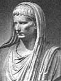

Roma İmparatorluğu’nun kurucusu olan Augustus (MÖ 63-MS 14) 500 yıl sürecek merkezi ve otoriter bir yönetim sistemi kurdu. Batı dünyasına daha önce eşi görülmemiş bir refah ve istikrar dönemi yaşattı.
Asıl adı Gaius Octavius olan ve hayatının ilk dönemlerinde kullandığı Octavian adıyla üne kavuşan Augustus, Julius Sezar’ın (MÖ 100-44) evlatlığıydı. Sezar’ın suikaste uğramasının ardından, 18 yaşındaki Octavian’a babasının dostları ve düşmanları da miras kalmış oldu. Sezar’ın ölümünün ardından başlayan iç savaşta, Octavian komplonun liderleri Brütüs ve Cassius’u MÖ 42 yılında Philippi’de yaşanan iki savaşın ardından yenilgiye uğrattı.

Sonraki on yıl boyunca Octavius gücünü iki generalle paylaştı: Mark Antony (MÖ 83-30) ve Marcus Aemilius Lepidus (MÖ 90-13). “İkinci Üçlü Erk Dönemi” olarak adlandırılan bu ittifak MÖ 36 yılında bozuldu. Lepidus tahttan inmeye zorlandı. Antony ise MÖ 31 yılında Octavian’a yenilince kendini öldürdü.
MÖ 27 yılında ülkenin kontrolünü tek başına ele geçiren Octavian’a Senato tarafından Augustus unvanı verildi. Bu kelime şanlı, şerefli anlamlarına geliyordu. Aynı zamanda kumandan anlamına gelen imparator namını da kazanmıştı. Bu aşamadan sonra Senato varlığını korudu ama cumhuriyet döneminde sahip olduğu yetkilerin önemli bir bölümünü imparatora devretti.
Augustus kırk yıldan uzun bir süre boyunca hüküm sürdü. Uzun iç savaş yıllarından sonra Roma’ya düzen ve istikrar getirdi. Orduda reformlar yaptı ve bir posta sistemi kurdu. Orta Avrupa ve Afrika’da büyük toprak parçalarını imparatorluğa dahil etti. Hakim olduğu alanlara yollar ve su kemerleri inşa etti.
Augustus ölümünün ardından Senato tarafından tanrı ilan edildi. Evlatlığı Tiberius (MÖ 42-MS 37) onun yerine tahta geçti.
Ek Bilgiler
1- Roma İmparatorları sık sık Augutus adını aldılar. Kimileri bu ismi kişisel adı olarak kullandı. 476 yılında görevden alınan son Roma İmparatoru Romulus Augustulus’tu.
2- Octavian’ın ölümünün ardından Senato “Sextilis” ayının adını değiştirip onun onuruna “Ağustos” (August) yaptı (July-Temmuz adı ise Julius Sezar’ı onurlandırmak için çoktan kullanılmaya başlanmıştı).
3- 1961 yılında Amerikalı şair Robert Frost (1874-1963), John F Kennedy’nin (1917-1963) göreve başlaması şerefine yazdığı bir şiirinde Augustus’a gönderme yapmıştır. Oldukça umutlu olan şiir yeni başkandan yeni bir “Augustian Çağı” açmasını beklemektedir.